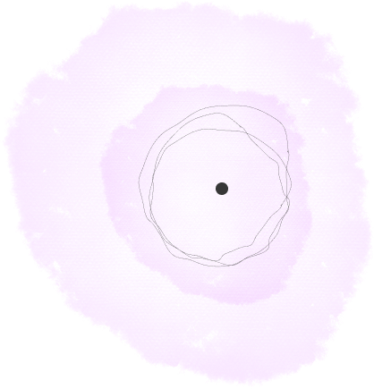
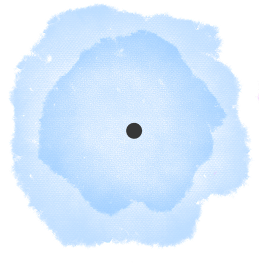
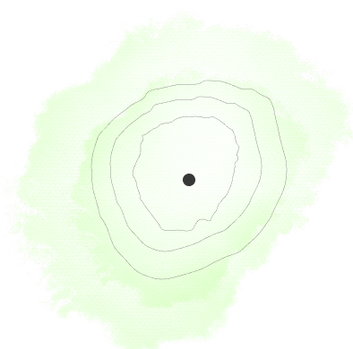
Who made this exhibit?
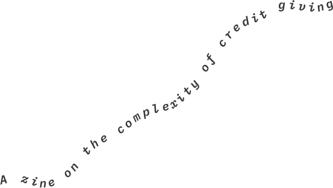
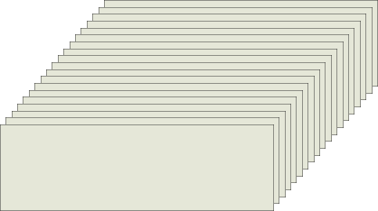
Hi. We’re a small team of visualization researchers at Linköping University in Sweden.
Why this web zine?
A while back, we worked with our local science museum —the Visualization Center C— to design an interactive exhibit. The project brought together research, design, technical development, and museum expertise. Then came the less exciting part: figuring out how to credit everyone involved. To do that, we looked around the museum and see how credit was handled.
We found that interactive exhibits don’t have credits. Dome shows in the museum, meanwhile, ended with credit reels, with rolling text and names and the whole thing. We thought this discrepancy was interesting.
So we interviewed staff and leadership at 4 science museums in 2 countries to understand more. What we learned is that crediting is complex, emotional, and very important.
Throughout this zine, you'll hear directly from the people we interviewed. Their words appear as quotes alongside what we learned from the research.
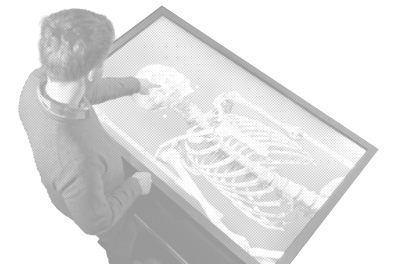
This zine exists to bring our
findings to you.
Who is
credit for?
So if it's not for the public, who is it for?
Turns out: almost everyone but them.
We started this whole project assuming credit was for visitors. Turns out, that's only half the story.
“...for the public I don't think it matters.”
Exhibit Developer
The person whose kid visits, points at the wall and says
“This is my mom’s work”
Exhibit designer
The colleague thinking about a raise, or their next job.
The early-career designer who needs proof for a portfolio, because right now it's
“not written on the piece itself.”
Director of Editorial
The educator who explains to a visitor that
“This is real data... not just something we made.”
Senior Director of Exhibitions
The funder, whose logo placement is contractual and non-negotiable.
Each of these people needs credit to do something different: to make someone proud, to prove someone worked here, to honor a contract, to say this is real science. So a credit list isn't one thing that some people happen to care about more than others. Credit is different things to different people, and that might be part of why nobody's landed on how to do it.
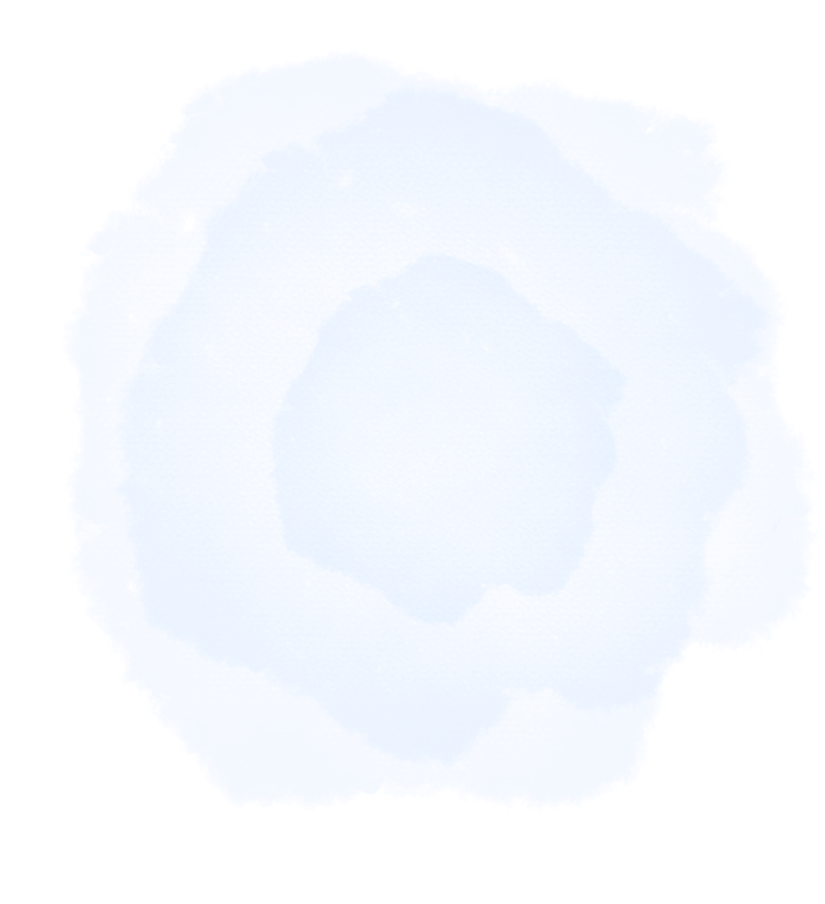
There is an (unspoken) rule... and exceptions
We found that nobody actually decides that exhibit creators shouldn't be credited. It's just how things ended up, and it's been that way long enough that it doesn't really feel like a decision anymore, more like an unspoken rule behind how museums work.
Almost none of the people we interviewed –staff and leadership across the four museums–had deeply considered exhibit crediting before we asked them about it directly.
The reaction to our questions wasn't defensiveness, and it wasn't really an explanation either; it was closer to mild surprise, like we'd pointed at something that had been sitting there the whole time without anyone noticing it. It’s as if the making of exhibits is invisible.
Invisibility is different from a cover-up, where someone is actively keeping something quiet, and it's different from an actual decision, where someone made a call and moved on. This felt more like a habit nobody remembers picking up, one that's been running in the background so long that questioning it just never comes up until someone from outside points at it.
“I hadn't even realized this was missing.”
“I don't think most people here are particularly concerned about it. I think it's just always been this way.”
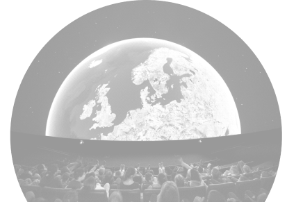
“There are certain people we always credit... if we work with a scientist from another organization, we credit them as a distinct person.”
“The planetarium shows have always been credited, and the website products are always credited... by contract, we credit all outside photos.”
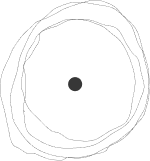
Once we looked closer, it turned out museums that skip crediting the exhibit team still credit plenty else, without anyone even having to think twice about it.
- Photos
- Outside scientists and data sources
- Dome shows
- Funders
- The exhibit team
So, it's not that these museums can't do credit. They already do it, constantly. The exhibit team is just the thing that slips through.
Giving credit is complex
We learned that credits are valuable, and that they are do-able. But also that making a credit list is complex, messy, and prone to failure.
“The question is always where to draw the line... The bigger the credit list gets, the less helpful it is to the people whose creativity was involved in making this product.”
I would say that nearly every department and hundreds of people are involved in the making of any exhibition… it’s easy to leave somebody off accidentally and offend them.
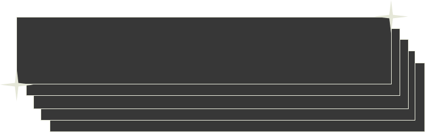
So who should be credited? How long should the list be? What happens when an exhibit changes? Who keeps the credits up to date?
It turns out, other fields have already grappled with these questions. Planetarium productions routinely credit the people who make them. The games industry has spent years negotiating who belongs in the credits as projects grow, teams change, and work crosses organizational boundaries. Neither has found a perfect answer, but they have developed shared expectations for what credit can look like.
Science museums could follow their example. Rather than leaving every exhibit team to figure it out from scratch, the field could develop shared guidelines for crediting exhibits — guidelines that can be adapted as teams, institutions, and exhibits change.
“Science doesn't just happen. It's made by people.”
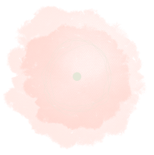
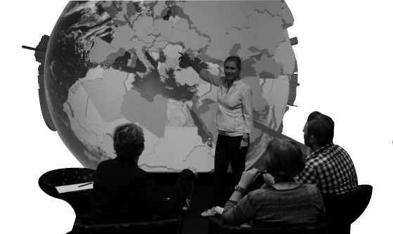
Humanize science
Crediting isn't only about making sure someone's name appears on a list. It can also change the story an exhibit tells.
Science museums are places where people encounter scientific knowledge, but exhibits often present that knowledge as a finished result, leaving much of the human work that produced it out of view.
Scientific knowledge is shaped through the work of many people, through choices, interpretations, collaborations, and revisions that often disappear when the finished result is presented to the public.
Credit offers one way to bring some of that scientific process back into view. It can tell visitors not only what we know, but something about how that knowledge came to be and who contributed to making it possible.
In this sense, giving credit is not only about recognizing the people who deserve it. It is also about making the human production of science part of the stories we tell.
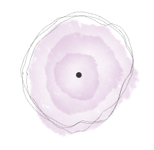
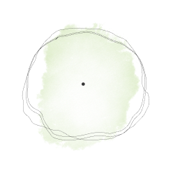
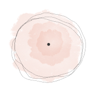
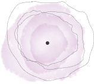
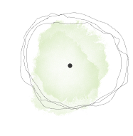
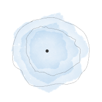
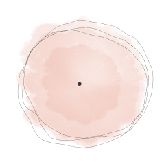
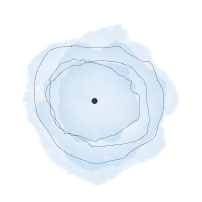
“Science doesn't just happen. It's made by people”